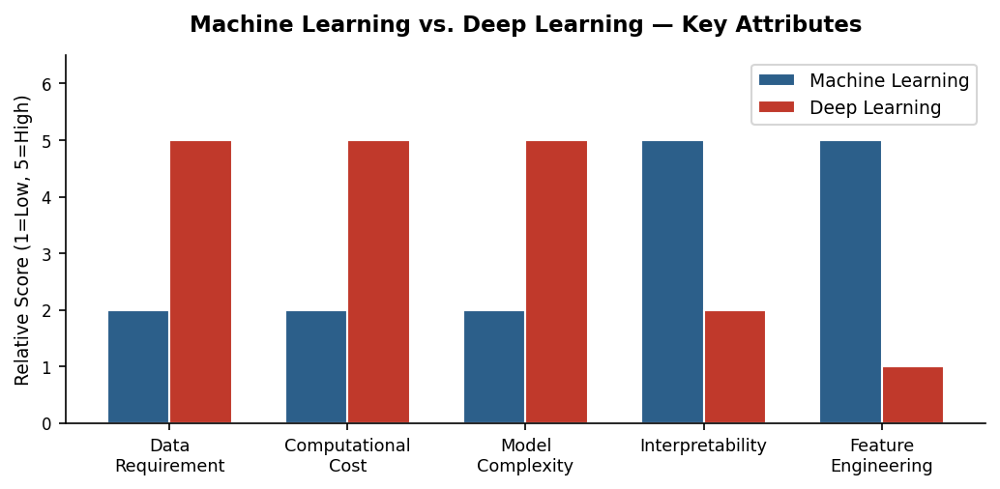

Artifact 01
AI and ML History Timeline
A visual journey through milestones in artificial intelligence and machine learning.
Explore artifactAIML-500 · Course Artifacts · 2026
Five artifacts from my foundational AI and machine learning coursework, covering historical development, practical tools, model comparison, data challenges, and responsible leadership.
A visual journey through milestones in artificial intelligence and machine learning.
Explore artifactAn interactive coaching assistant for responsible AI adoption and change leadership.
Explore artifact
A comparative report exploring model selection for structured data and image recognition.
Explore artifactThree scenarios exploring data quality, model evaluation, and responsible data use.
Explore artifactA briefing connecting AI infrastructure, energy procurement, and responsible communication.
Explore artifact